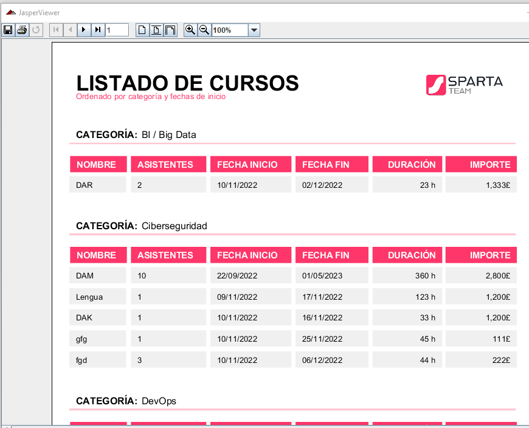

En esta pantalla tendremos la posibilidad de visualizar los datos introducidos en formato de informes.
La vista cuenta con los siguientes elementos:
1.Etiqueta que muestra el apartado en el que nos encontramos. En este caso es “Informe”.
2.Logo de la empresa.
3. Botón “Cursos”. Al pulsar este botón tendremos acceso al informe que lista los cursos previamente introducidos.
4. Botón “Matriculas”. Al pulsar este botón tendremos acceso al informe que lista las matrículas previamente introducidas.
5. Botón “Alumnos”. Al pulsar este botón tendremos acceso al informe que lista los alumnos previamente introducidos.
6. Flecha de regreso a menú principal.
7. Botón de ayuda (común en varias vistas).
A continuación se muestra un ejemplo de cómo se vería un informe.
